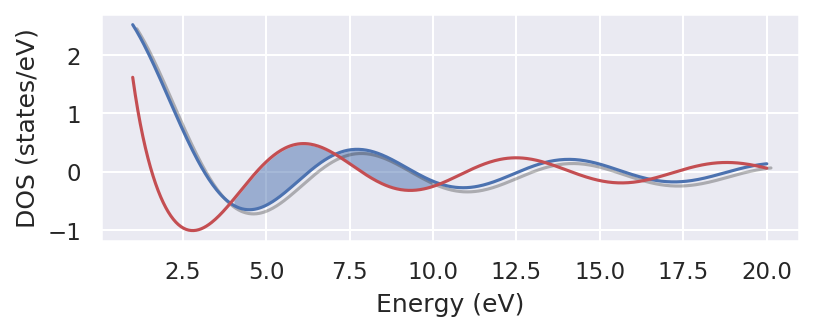
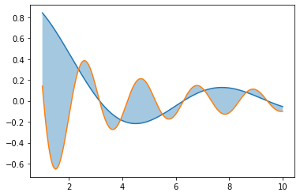

Quantum-ESPRESSO Post-processings¶
Here we will present some simple pythhon codes to do our qe post-process
! use SEABORN for high quality 2d data plots
first equation
\(\alpha=\int x^2dx\)
Density of states¶
Single Dos with E_f¶
[2]:
from ase import Atoms
from ase.units import Ry
from ase.io import read, write
from ase.build import bulk
from espresso import espresso
from ase.calculators.espresso import Espresso
from ase.constraints import UnitCellFilter
from ase.optimize import LBFGS
pseudopotentials = {'Si': 'Si.pbe-n-van.UPF'}
input_data = {
'system': {
'ecutwfc':24,
'ecutrho': 276,
'nbnd':6,
'occupations':'smearing',
'smearing':'mp',
'degauss': 0.001
},
'control': {
'verbosity':'high'
},
'electrons': {
'electron_maxstep':200,
'diagonalization':'david'
}
}
a0 = 5.43
test = Atoms('Si2', [(0, 0, 0),
(0.25, 0.25, 0.25)],
pbc=True)
b = a0 / 2
test.set_cell([(0, b, b),
(b, 0, b),
(b, b, 0)], scale_atoms=True)
calc = Espresso(pseudopotentials=pseudopotentials,
tstress=True, tprnfor=True, label='mpitest', kpts=(10, 10, 10), input_data=input_data)
test.set_calculator(calc)
test.get_potential_energy()
#ucf = UnitCellFilter(test)
#opt = LBFGS(ucf)
#opt.run(fmax=0.005)
[2]:
-261.1324465970895
[3]:
from Espresso37 import QElog
test=QElog("mpitest.pwo")
your file is in path
it seems normal file
[3]:
from ase.visualize import view
view(test)
[6]:
%matplotlib inline
import numpy as np
from matplotlib import font_manager
import matplotlib.pyplot as plt
import seaborn as sns
import matplotlib.patheffects as path_effects
###############
font_manager.findfont('Helvetica World')
plt.rc('font', family='Helvetica World', size=20)
plt.rc('font', serif= 'Helvetica World', size=12)
hfont = {'fontname':'Helvetica World'}
#plt.rc('font', family='sans-serif')
plt.rcParams['axes.linewidth'] = 0.75
plt.rcParams['xtick.major.size'] = 4
plt.rcParams['xtick.minor.size'] = 2
plt.rcParams['xtick.major.width'] = 0.75
plt.rcParams['xtick.minor.width'] = 0.75
plt.rcParams['ytick.major.size'] = 4
plt.rcParams['ytick.minor.size'] = 2
plt.rcParams['ytick.major.width'] = 1.75
plt.rcParams['ytick.minor.width'] = 0.75
plt.rcParams['ytick.direction'] = 'in'
plt.rcParams['xtick.direction'] = 'in'
plt.rcParams['figure.dpi'] = 150
plt.rcParams['figure.figsize'] = (6,2)
sns.set()
print (x)
x=np.linspace(1,20,500)
y=3*np.sin(x)/x
y2=3*np.cos(x)/x
plt.xlabel("Energy (eV)")
plt.ylabel("DOS (states/eV)")
plt.plot(x,y,path_effects=[path_effects.SimpleLineShadow(),
path_effects.Normal()])
plt.plot(x,y2, 'r')
plt.fill_between(x,y,y2, where = (x > 4) & (x < 10), alpha=0.5 )
plt.savefig("1DOS.png", bbox_inches='tight', dpi=300)
plt.show()
[ 1. 1.03807615 1.0761523 1.11422846 1.15230461 1.19038076
1.22845691 1.26653307 1.30460922 1.34268537 1.38076152 1.41883768
1.45691383 1.49498998 1.53306613 1.57114228 1.60921844 1.64729459
1.68537074 1.72344689 1.76152305 1.7995992 1.83767535 1.8757515
1.91382766 1.95190381 1.98997996 2.02805611 2.06613226 2.10420842
2.14228457 2.18036072 2.21843687 2.25651303 2.29458918 2.33266533
2.37074148 2.40881764 2.44689379 2.48496994 2.52304609 2.56112224
2.5991984 2.63727455 2.6753507 2.71342685 2.75150301 2.78957916
2.82765531 2.86573146 2.90380762 2.94188377 2.97995992 3.01803607
3.05611222 3.09418838 3.13226453 3.17034068 3.20841683 3.24649299
3.28456914 3.32264529 3.36072144 3.3987976 3.43687375 3.4749499
3.51302605 3.5511022 3.58917836 3.62725451 3.66533066 3.70340681
3.74148297 3.77955912 3.81763527 3.85571142 3.89378758 3.93186373
3.96993988 4.00801603 4.04609218 4.08416834 4.12224449 4.16032064
4.19839679 4.23647295 4.2745491 4.31262525 4.3507014 4.38877756
4.42685371 4.46492986 4.50300601 4.54108216 4.57915832 4.61723447
4.65531062 4.69338677 4.73146293 4.76953908 4.80761523 4.84569138
4.88376754 4.92184369 4.95991984 4.99799599 5.03607214 5.0741483
5.11222445 5.1503006 5.18837675 5.22645291 5.26452906 5.30260521
5.34068136 5.37875752 5.41683367 5.45490982 5.49298597 5.53106212
5.56913828 5.60721443 5.64529058 5.68336673 5.72144289 5.75951904
5.79759519 5.83567134 5.87374749 5.91182365 5.9498998 5.98797595
6.0260521 6.06412826 6.10220441 6.14028056 6.17835671 6.21643287
6.25450902 6.29258517 6.33066132 6.36873747 6.40681363 6.44488978
6.48296593 6.52104208 6.55911824 6.59719439 6.63527054 6.67334669
6.71142285 6.749499 6.78757515 6.8256513 6.86372745 6.90180361
6.93987976 6.97795591 7.01603206 7.05410822 7.09218437 7.13026052
7.16833667 7.20641283 7.24448898 7.28256513 7.32064128 7.35871743
7.39679359 7.43486974 7.47294589 7.51102204 7.5490982 7.58717435
7.6252505 7.66332665 7.70140281 7.73947896 7.77755511 7.81563126
7.85370741 7.89178357 7.92985972 7.96793587 8.00601202 8.04408818
8.08216433 8.12024048 8.15831663 8.19639279 8.23446894 8.27254509
8.31062124 8.34869739 8.38677355 8.4248497 8.46292585 8.501002
8.53907816 8.57715431 8.61523046 8.65330661 8.69138277 8.72945892
8.76753507 8.80561122 8.84368737 8.88176353 8.91983968 8.95791583
8.99599198 9.03406814 9.07214429 9.11022044 9.14829659 9.18637275
9.2244489 9.26252505 9.3006012 9.33867735 9.37675351 9.41482966
9.45290581 9.49098196 9.52905812 9.56713427 9.60521042 9.64328657
9.68136273 9.71943888 9.75751503 9.79559118 9.83366733 9.87174349
9.90981964 9.94789579 9.98597194 10.0240481 10.06212425 10.1002004
10.13827655 10.17635271 10.21442886 10.25250501 10.29058116 10.32865731
10.36673347 10.40480962 10.44288577 10.48096192 10.51903808 10.55711423
10.59519038 10.63326653 10.67134269 10.70941884 10.74749499 10.78557114
10.82364729 10.86172345 10.8997996 10.93787575 10.9759519 11.01402806
11.05210421 11.09018036 11.12825651 11.16633267 11.20440882 11.24248497
11.28056112 11.31863727 11.35671343 11.39478958 11.43286573 11.47094188
11.50901804 11.54709419 11.58517034 11.62324649 11.66132265 11.6993988
11.73747495 11.7755511 11.81362725 11.85170341 11.88977956 11.92785571
11.96593186 12.00400802 12.04208417 12.08016032 12.11823647 12.15631263
12.19438878 12.23246493 12.27054108 12.30861723 12.34669339 12.38476954
12.42284569 12.46092184 12.498998 12.53707415 12.5751503 12.61322645
12.65130261 12.68937876 12.72745491 12.76553106 12.80360721 12.84168337
12.87975952 12.91783567 12.95591182 12.99398798 13.03206413 13.07014028
13.10821643 13.14629259 13.18436874 13.22244489 13.26052104 13.29859719
13.33667335 13.3747495 13.41282565 13.4509018 13.48897796 13.52705411
13.56513026 13.60320641 13.64128257 13.67935872 13.71743487 13.75551102
13.79358717 13.83166333 13.86973948 13.90781563 13.94589178 13.98396794
14.02204409 14.06012024 14.09819639 14.13627255 14.1743487 14.21242485
14.250501 14.28857715 14.32665331 14.36472946 14.40280561 14.44088176
14.47895792 14.51703407 14.55511022 14.59318637 14.63126253 14.66933868
14.70741483 14.74549098 14.78356713 14.82164329 14.85971944 14.89779559
14.93587174 14.9739479 15.01202405 15.0501002 15.08817635 15.12625251
15.16432866 15.20240481 15.24048096 15.27855711 15.31663327 15.35470942
15.39278557 15.43086172 15.46893788 15.50701403 15.54509018 15.58316633
15.62124248 15.65931864 15.69739479 15.73547094 15.77354709 15.81162325
15.8496994 15.88777555 15.9258517 15.96392786 16.00200401 16.04008016
16.07815631 16.11623246 16.15430862 16.19238477 16.23046092 16.26853707
16.30661323 16.34468938 16.38276553 16.42084168 16.45891784 16.49699399
16.53507014 16.57314629 16.61122244 16.6492986 16.68737475 16.7254509
16.76352705 16.80160321 16.83967936 16.87775551 16.91583166 16.95390782
16.99198397 17.03006012 17.06813627 17.10621242 17.14428858 17.18236473
17.22044088 17.25851703 17.29659319 17.33466934 17.37274549 17.41082164
17.4488978 17.48697395 17.5250501 17.56312625 17.6012024 17.63927856
17.67735471 17.71543086 17.75350701 17.79158317 17.82965932 17.86773547
17.90581162 17.94388778 17.98196393 18.02004008 18.05811623 18.09619238
18.13426854 18.17234469 18.21042084 18.24849699 18.28657315 18.3246493
18.36272545 18.4008016 18.43887776 18.47695391 18.51503006 18.55310621
18.59118236 18.62925852 18.66733467 18.70541082 18.74348697 18.78156313
18.81963928 18.85771543 18.89579158 18.93386774 18.97194389 19.01002004
19.04809619 19.08617234 19.1242485 19.16232465 19.2004008 19.23847695
19.27655311 19.31462926 19.35270541 19.39078156 19.42885772 19.46693387
19.50501002 19.54308617 19.58116232 19.61923848 19.65731463 19.69539078
19.73346693 19.77154309 19.80961924 19.84769539 19.88577154 19.9238477
19.96192385 20. ]

Band_Structure¶
This script calculates band for spin_degenrate (spin=1) and non-degenrate (spin=2)
In this calculation one should change verbosity to high and use kpoints like
[ ]:
from Espresso37 import QElog
#bandin=input("enter the name of band in file : ")
bandout=input("enter the name of band out file : ")
Spin=int(input("enter spin polarization 1 or 2 :"))
test=QElog(bandout,spin=Spin)
gap=test.GAP
fermi=test.HOMO
test.plotband(fermi, "newband.png")
POTENTIAL¶
GPAW Example¶
[1]:
from ase.io import read, write
from ase.visualize import view
from ase.build import bulk
from gpaw import PW, GPAW, LCAO
test=bulk('Si', 'fcc', a=5)
test.set_calculator(GPAW(mode=PW(200), xc='PBE', kpts=[3,3,3], txt="out.txt"))
test.get_potential_energy()
[1]:
-3.4048627185542024
surface ENERGY¶
we can calculate surface energy from
\(E_S=\alpha \int f(x)dx\)
[5]:
%matplotlib inline
import numpy as np
import matplotlib.pyplot as plt
x=np.linspace(1,10,200)
y=np.sin(x)/x
y2=np.sin(3*x)/x
plt.plot(x,y)
plt.plot(x,y2)
plt.fill_between(x, y, y2, alpha=0.4)
plt.show()

Quantum espresso with ASE¶
add this line to your .bashrc
export ASE_ESPRESSO_COMMAND=”/home/yavar001/SOURCES/q-e-qe-6.4/bin/pw.x -in PREFIX.pwi > PREFIX.pwo”
and then start your calculation
[42]:
from Espresso37 import QElog
[42]:
array([-0.01243185, -0.01243185, -0.01243185, -0. , -0. ,
0. ])
New title¶
Here we check equation \(\alpha=\int x dx\)
[1]:
%matplotlib inline
import numpy as np
import matplotlib.pyplot as plt
x=np.linspace(1,10,200)
y=np.sin(x)/x
y2=np.sin(3*x)/x
plt.plot(x,y)
plt.plot(x,y2)
plt.fill_between(x, y, y2, alpha=0.4)
plt.show()
[ ]: